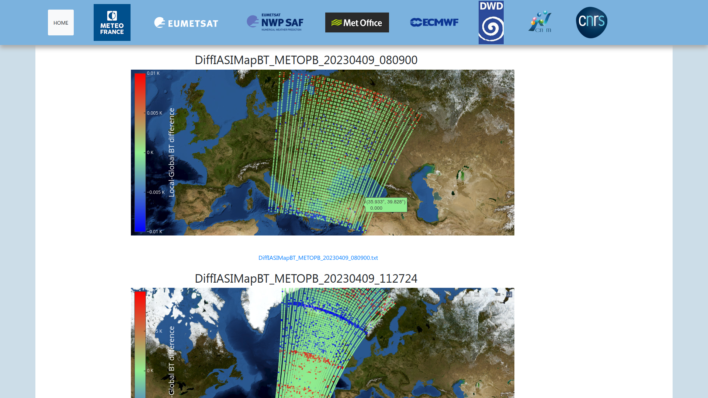
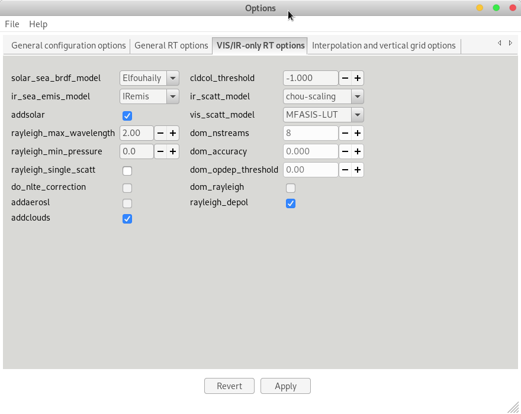
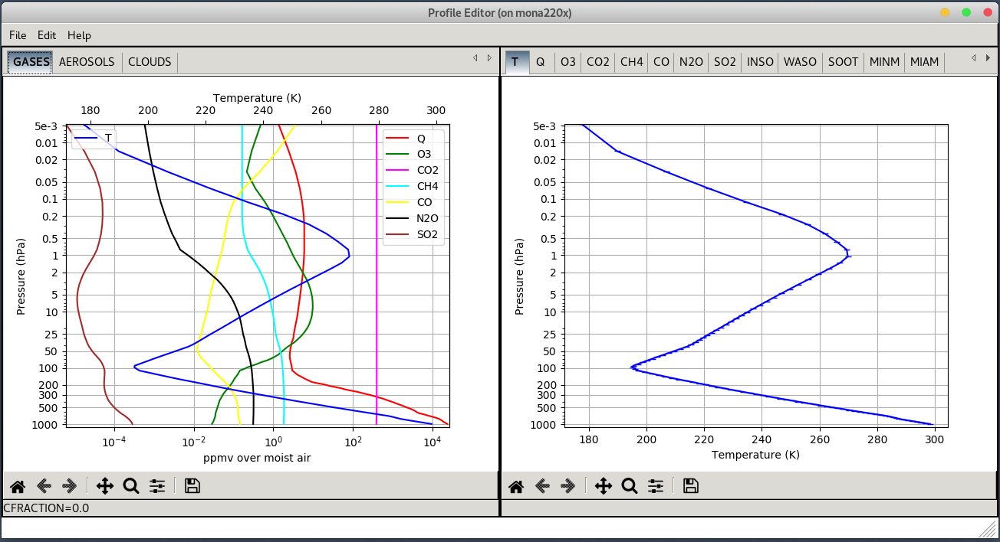
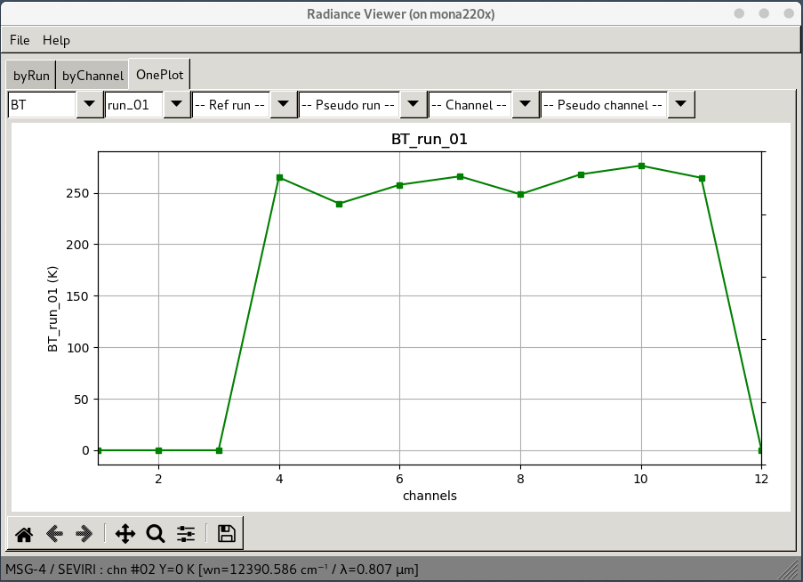
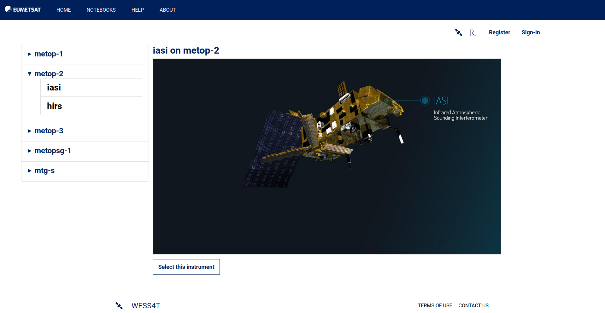
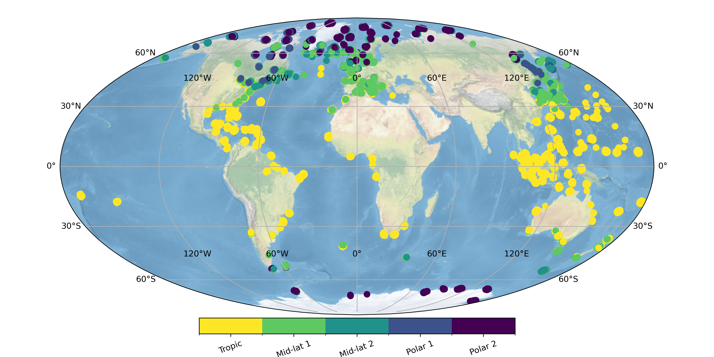
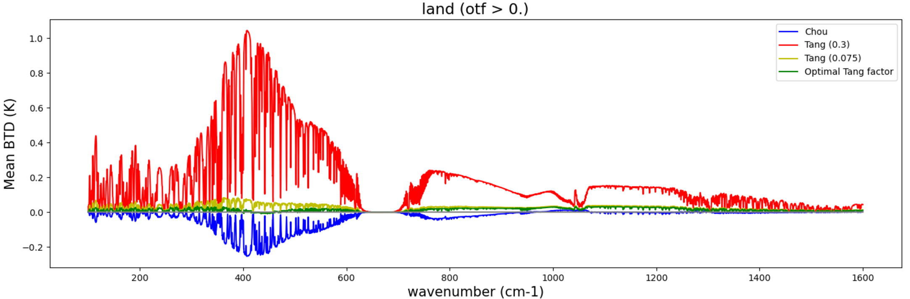
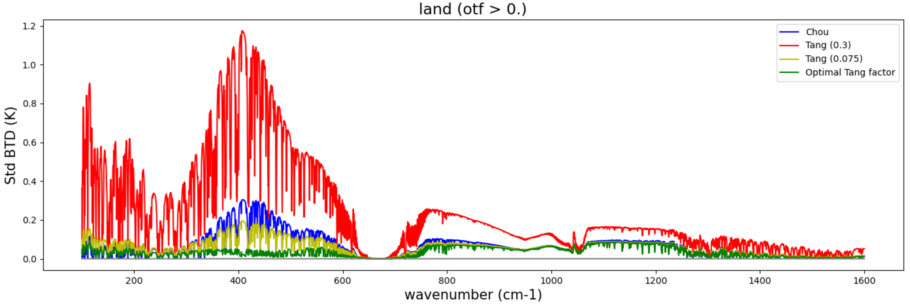
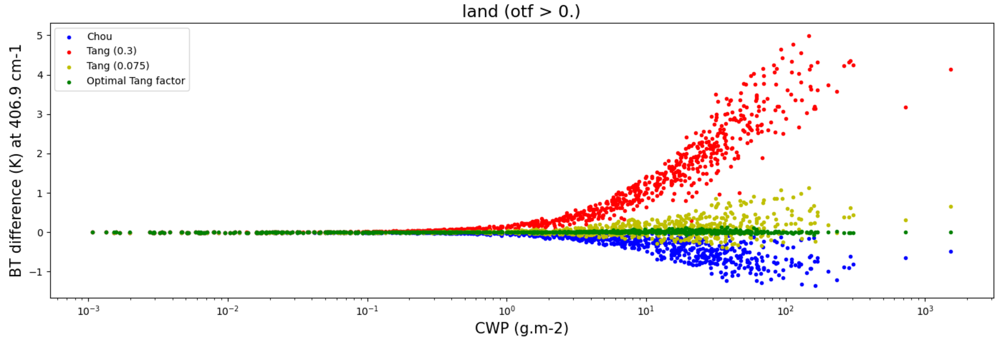

Bilan d'activités à CEMS/Sondage
Assemblée Générale du CEMS
Péré S., Lebrat T., Jules V., Lalande J.-M.,
Table of Contents
Staff
***
ITM

***
IR - SAFNWP
***
Postdoctorant - C3S2
***
Chercheur
- Prochain transfert le 01/09/2023 : Marie Boisserie, DIROP/PG/LABO
- 2 départs fin 2022 : Pascale Roquet (retraite) & Mathieu Asseray (DIROI/PREVI)
Activités
- SAFNWP
- WP Radiative Transfer
- WP Preprocessing
- Terre-Océan-Surface Continentale-Atmosphère (financement CNES)
- IASI: proposition à l'arrêt suite à la dernière évaluation du comité TOSCA
- Forum: proposition soumise à l'APR 2023 (1ère soumission 2020)
- Copernicus Climate Change - Phase 2 (Présentation de V. Jules)
- Autres activités +/- débutées :
- Aéorosols (J. Ceamanos, GMME/VEGEO)
- Images Satellites Prévues (P. Chambon, GMAP/OBS)
- RTTOV IA - Émuler RTTOV avec un réseau de neurone (Début stage 11 avril - Présentation S. Péré)
- Comparaison RTTOV/DISAMAR dans l'ultraviolet
SAFNWP - Preprocessing
- Développements de AAPP the ATOVS and AVHRR Pre-processing Package
- Masque nuageux MAIA pour NOAA 21 (AAPP 8.10)
- Ajoût modèle ECMWF (AAPP 8.11)
- Gestion/Maintenance traitement locale IASI - gestion de crise
- Niveaux 1C assimilés dans le modèle de PNT
- Gestion/Maintenance du site de monitoring - gestion de crise
- Dernier en date 3 avril: changement de la compression des données IASI/Eumetsat
- Demande d'un Apprentis pour la gestion web, traitement
- Lorsque l'on pourra : Refonte du site web monitoring
- Mi 2024 : démarrage des activités concernant IASI-NG

Check out IASI monitoring.
SAFNWP - Radiative Transfer
| Plateforme | Instrument | Type | Origine |
|---|---|---|---|
| NOAA-21 | VIIRS | Multispectral/LEO | SAFNWP |
| LandSat-7 | ETM | Multispectral/LEO | SAFNWP |
| FY4-B | AGRI | Multispectral/GEO | SAFNWP |
| GIIRS | Hyperspectral/GEO | SAFNWP | |
| Dummyhi | Dummy10 | Hyperspectral-Box-car | |
| Dummyhi | Dummy11 | Hyperspectral/ | Scalian |
| DMSP 1-4 | SSH | Multispectral | C3S2 |
| Oceansat | SSTM | Multispectral | SAFNWP |
| Dummyhi | None Disclosure Agreement | JMA | |
| MTG | FCI | Multispectral/GEO | |
| Meteor | SI | Hyperspectral/LEO | C3S2 |
| Nimbus-4 | PMR | Gas Pressure Modulation | C3S2 |
| IRIS | Hyperspectral-Far IR | C3S2 | |
| Forum | Hyperspectral-Far IR | TOSCA | |
| Nimbus-4 & 5 | SCR | Multispectral | C3S2 |
| FY3E | HIRAS 2 | Multispectral | SAFNWP |
| CO2M | CLIM | SAFNWP |
Perspectives 2024-2023 :
- Lancement de RTTOV v14 début 2024
- Gel du code fin mai 2023
- Redéfinition des propriétés atmosphériques → couches versus niveaux
- Recalcul des bases de transmittances
- Refonte de l'interface utilisateurs → fort impact RTTOV-GUI
- Intégration de Wess4T dans SAFNWP
- Requêtes provenant principalement du SAFNWP Helpdesk
- C3S2 (Instruments historiques pour l'assimilation dans ERA-6)
- Quelques requêtes directes concernant des nouveaux concepts instrumentaux
- Présentation T. Lebrat sur la génération des coefficients/Base de données transmittances




Check out Wess4t application.
TOSCA - Radiative Transfer


Proposition Forum

  
Proposition IASI


Perspectives
- Les activités comparasions des codes de transfert radiatif seront uniquement réalisées dans le TOSCA Forum
- Arrêt du TOSCA IASI: un article en cours d'écriture pour faire le bilan de ces activités
- En 2024 : proposition d'un TOSCA Transfert Radiatif (CNRM/LMD etc.)
Divers/Conclusions/Perspectives
- Cours
- ENSTA - Bretagne : Intervention de 4h
- ENSATT - Lannion : Création d'un module de 18h
- Formation télédétection spatiales (MF): 4H
- Contact avec le Master TELENVI (Agro-Rennes)
- Objectifs rentrée 2023
- Recrutement d'un doctorant sur contrat SAFNWP
- Formation Marie Boisserie
- Publications
- Matoza et al., 2022, Science
- Lalande et al. 2022, AMT
- En préparation
- Intercomparaison RTTOV/4A
- Publication Wess4T
- Suite de l'article de Science
- Conférences
- Eumetsat, Bruxelles, septembre 2022
- ITSC, Tromsø, mars 2023